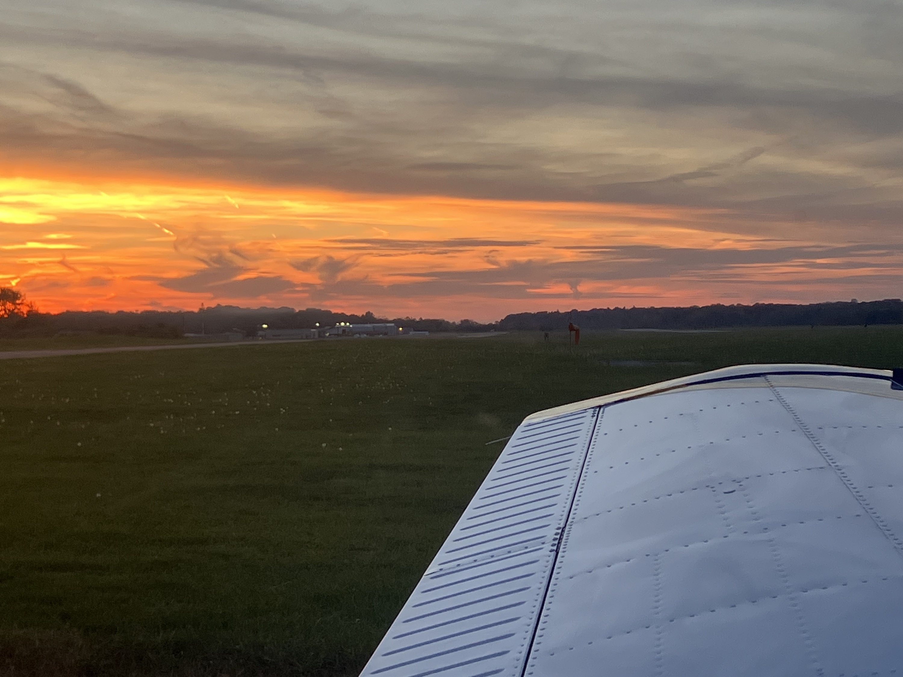
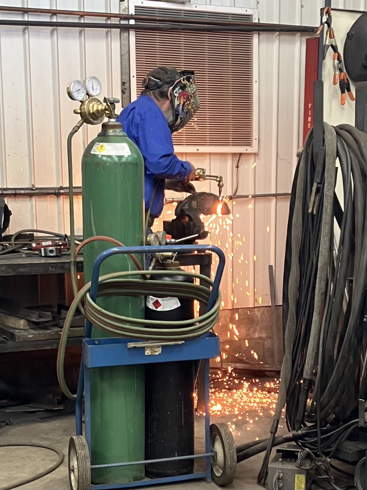

October 2026

Happy Halloween! This month a lot has happened! In the realm of flight training, I found a school that has a Cessna 172, about 20 minutes away! This is where I will finish up my private license. I’ve also found an instructor to work with. The goal is to take a few (4 to 8) lessons, get back up to speed and familiar with the airport and surround area, and then schedule a DPE and take the test! Because I can only fly on weekends, this will take about a month, so the ride will take place sometime in early December.
We had our fall break this month, and I was able to fly home and visit for the weekend! Since it was only two days, I couldn’t stay for long, but it was really nice to visit with some friends and see my family again. I will be back for winter break in December! (Thankfully I get a whole month off)
I’ve been going to a Covenant Church about 30 minutes away called Harbert Community Church for as long as I have been living in Michigan. I really like the pastors, and the people are very nice! For the last few weeks they have been doing a class, to learn more about the Covenant denomination as a whole and Harbert as a church. It’s been very interesting, and I’m learning a lot — for example, the word “catholic” means “universal”, and being a “catholic church” just means that “we understand ourselves to be a part of the community of believers that began with Jesus’s first followers, is alive today, and will continue until Christ comes again” (Covenant Publications, What Does the Covenant Church Believe?). It’s been fascinating to learn what beliefs the church holds and how they stand out from other denominations.
It’s also been interesting to compare Harbert to Castle Oaks Covenant Church, the church I go to in Colorado. Even before I learned about the details of the denomination, I could still find some subtle similarities in the way that the two churches operate, in the people who attend, and in the sermons. There were some differences (like the music), but the biggest and most significant similarity that I saw was how people can make others feel like they are at home there, like they belong. This might be true of other denominations, but I haven’t felt that in any of the Seventh-Day Adventist churches I’ve attended while at Andrews, so it stood out to me as Covenental.
In my maintenance classes, we have been continuing to make progress towards taking the general written test and the airframe practical test. We finally started the physics unit in my physics class, and while I am understanding all the content, we learned most of it in my high school physics class (or my ground school lessons with Fitz), so it gets a little boring too. We lit lots of things on fire in Materials and Processes! We learned that when copper is work hardened, heating it up and cooling it quickly makes it soft and workable again. We also learned that when you burn acrylic plastic, it smells pretty horrendous, as opposed to acetate plastic (which doesn’t smell very good either). In Metal Structures, we are making a “joggle” with a doubler and then drilling it to attach an antenna. It’s also the first thing we’ve primed — putting a protective layer of Zinc Chromate or something similar to prevent corrosion. I made a pretty big mess, but it was sort of fun anyway!

